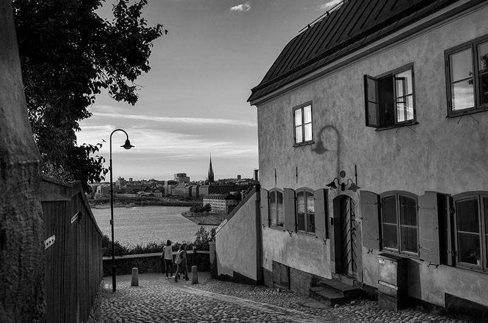

-Stockholms oslipade gråsten
Nervösa ungdomar som desperat försöker hitta sig själv bland barer och akvarell. Gubbar på exakt samma jakt som ungdomen men med insikten om att sökandet är fruktlöst Man kan riktigt känna besvikelsen krypa upp ur gatstenarna efter generationer av desperat letande efter mening som aldrig hans ikapp.
